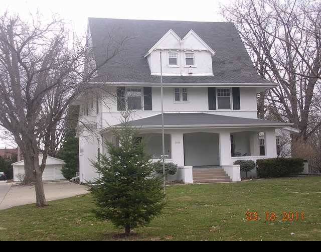

1404 E. Washington

- Robert and Mary Murphy Residence (1906)
- English Arts and Crafts style on a center hall plan.
- Twinned Dormers, kick roof, which forms a pent of the gable sides, the low Tudor arch for the porches.
- 3/4 call out on the walls to express horizontal.
- Murphy was a retired merchant.
- Sold to Dr. Daugherty in 1917